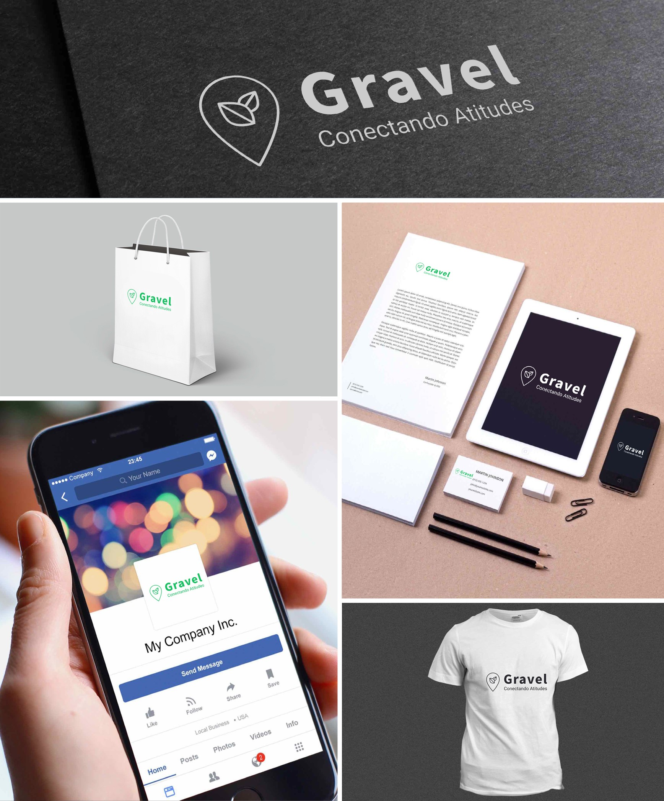
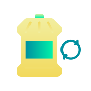
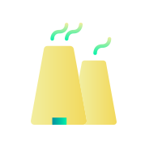
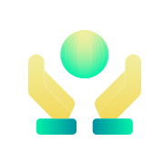

A Gravel é uma organização sem fins lucrativos, constituída e gerida por Natã Almeida do curso de Sistemas de Informação da USP (Universidade de São Paulo) – campus São Carlos.
Desde 2019, a Gravel oferece consultorias para micro, médias e grandes empresas, com baixo custo ao praticado no mercado, promovendo soluções de qualidade através da sustentabilidade empresarial, que consiste na aplicação de ações referentes ao meio ambiente e na adoção de medidas que promovem o resultado financeiro e propiciam, de forma ética, o desenvolvimento de toda a comunidade.
Para isso, contamos com um time experiente no mundo dos negócios que preza pela inovação e pela sustentabilidade em suas ações. E contamos com nossos parceiros, que acreditam no nosso potencial de impacto e endossam nosso propósito.
A nosso compromisso é tornar empresas sustentáveis pelo mundo, oferecendo soluções inteligente para desenvolver e aprimorar negócios.
MÍDIA

SERVIÇOS

Redução de Desperdícios
Uma empresa de referência no seu mercado é aquela que sabe reduzir ao máximo as perdas e otimizar os processos para manter sua excelência e saúde financeira. O conceito de redução de desperdícios da Gravel é contemplado em todos os aspectos produtivos como materiais utilizados, recursos necessários, custos e tempo.
Gestão Inteligente de Finanças
Todo negócio tem como objetivo ter uma vida financeira saudável. Políticas verdes são capazes de trazer uma outra fonte de renda para a empresa, como se fosse uma renda acessória, ou mesmo de economia de recursos, além de trazer vantagem competitiva e diferenciação de mercado, abrindo espaço para a expansão de nichos.
Captação de Green Customers
É importante lembrar que ações positivas cooperam para bons índices de saúde da marca. Uma imagem positiva da empresa, contribui para a credibilidade e confiança junto aos consumidores, fornecedores e investidores. Nesse sentido, essa área abrange métodos de marketing e dados para achar e alcançar novos clientes que estão alinhados com com as políticas sustentáveis.

Produção de Produtos com Responsabilidade
Empresas que têm como meio de crescimento principal a produção de produtos, precisam ter uma preocupação extra com os recursos que obtém a título de matéria-prima. A Gravel entende que esse perfil de empresa tem a responsabilidade primária de perceber os impactos que causa ao meio ambiente. Sabemos que alguns impactos são inevitáveis, mas existem práticas que permitem não substituir, mas ao menos mitigar estas alterações ambientais.
Ambiente de Trabalho Organizado
Observa-se que organizações que adotam práticas sustentáveis tendem a possuir um clima organizacional mais harmonioso, uma vez que a preocupação com a sociedade e o meio ambiente gera maior engajamento dos colaboradores, que se sentem contemplados com essas políticas. Vale ressaltar que o maior engajamento da equipe acarreta uma melhora na performance de execução do time.

Prestação de Serviço Consciente
As empresas que são caracterizadas pela prestação de serviços, como as de consultoria, escritórios de advocacia, entre outras, devem estar atentas quanto às pessoas que compõem seu time, tendo em vista que os projetos sobre os serviços que entregam são produzidos por estas pessoas. Nesse sentido, a Gravel busca implementar políticas que estimulam a diversidade e a convivência das diferenças dentro de suas organizações, observando e incorporando as tendências de comportamentos que a sociedade passa a adotar, entendendo que são essenciais para que se obtenha bons resultados.
MISSÃO
A missão da Gravel é eleger a sustentabilidade como métrica de avaliação no mundo dos negócios. Entendemos que a partir do momento em que a empresa adota práticas sustentáveis em sua rotina, de maneira que funcionem, como regra interna, faz sentido que isso seja levado em consideração na hora de se realizar a avaliação de desenvolvimento individual, assim como a avaliação do departamento da empresa. Queremos mostrar que essas políticas são assertivas dentro da corporação e incentivar empresas que não possuem sa adotá-la e considerar incorporar uma cultura organizacional sustentável na empresa.